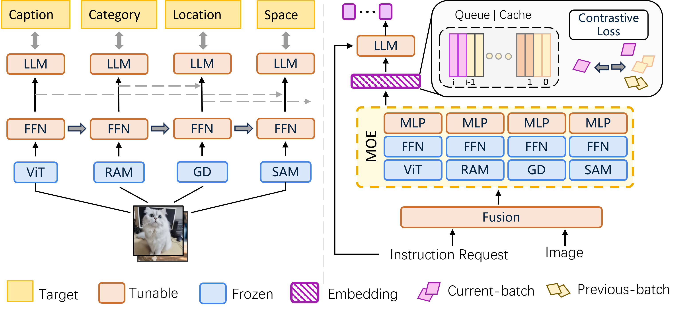

Visual information understanding refers to the process by which a computer analyzes the content of images or videos to automatically recognize and interpret objects, scenes, actions, and their relationships. Previous research has primarily used various pretext tasks to achieve representation learning, yielding significant results. Despite these efforts, there remains a challenge in achieving a balance among different experts, often resulting in trade-offs that compromise one aspect in favor of another. In light of this, we propose Astrea, a novel framework designed to overcome the challenges of multi-model collaboration. We propose a pre-alignment strategy to reduce the training load on the main model, incorporating residual connections to effectively prevent knowledge forgetting. Additionally, we introduce a simple and efficient dynamic feature fusion method, and leverage momentum contrastive learning to further enhance model performance. Experimental results show that Astrea achieves new state-of-the-art (SOTA) performance in many visual scenarios.
Note: The core code will be released after published.
